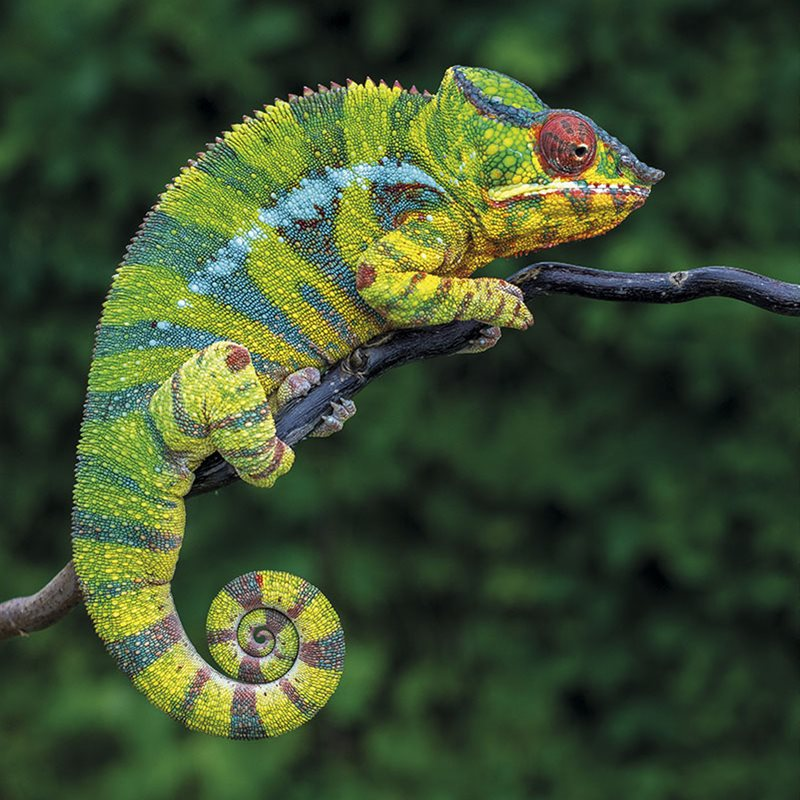

Camaleón (Chamaeleonidae)

Hábitat y Estilo de Vida
Los camaleones habitan en selvas, bosques y zonas desérticas, principalmente en África, Madagascar y algunas partes de Asia y Europa.
Características
- Capacidad de cambiar de color para camuflarse o comunicarse.
- Ojos independientes que pueden moverse en diferentes direcciones.
- Lengua extremadamente larga y rápida para cazar insectos.
- Dedos adaptados para sujetarse a ramas con facilidad.
- Cola prensil utilizada para equilibrio y agarre.
Volver al Inicio